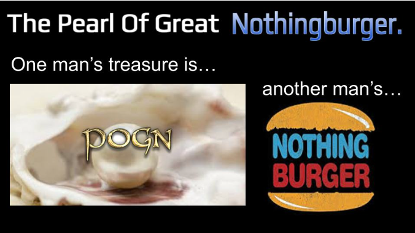

A reflection on spiritual gifts,
revelation,
inheritance,
and the challenge of recognizing treasure when others do not.
The Principle
Greg, this is one of the most fundamental principles I need you to attend to.
In many ways, it is one of the reasons I have been helping you stretch your mind.
Before you can comfortably receive many of the gifts I have prepared for you,
you must learn how to recognize and value them.
Not according to the opinions of the crowd.
Not according to whether other people understand them.
Not according to whether they applaud,
approve,
or even notice.
I have many gifts I desire to give you.
Many treasures.
Many inheritances.
Some of them are already yours.
In fact, many of them will come to you with very little effort on your part.
They are gifts, Greg.
Gifts are received, not earned.
But there is a challenge.
You must learn to believe that I have truly given them to you.
And you must learn to value them because I value them.
One person's treasure is another person's meh.
This has always been the case.
Different People Value Different Gifts
“For all have not every gift given unto them; for there are many gifts,
and to every man is given a gift by the Spirit of God.”
— Doctrine and Covenants 46:11
“To some is given one, and to some is given another,
that all may be profited thereby.”
— Doctrine and Covenants 46:12
A gift that feels priceless to one person may not resonate with another,
because they have been given different gifts,
different assignments,
different eyes,
and different hungers.
The Natural Man Does Not See the Value
“But the natural man receiveth not the things of the Spirit of God:
for they are foolishness unto him...”
— 1 Corinthians 2:14
Sometimes your treasure may literally appear foolish,
strange,
excessive,
or unimportant to someone else.
Some Hear, Some Do Not
“He that hath ears to hear, let him hear.”
— Jesus Christ
The same word.
The same seed.
The same invitation.
Different soil.
Pearls Before Swine
“Give not that which is holy unto the dogs,
neither cast ye your pearls before swine...”
— Matthew 7:6
What is a pearl to one person may look like a pebble to another.
Lehi's Dream
In 1 Nephi 8, some people reached the tree and treasured the fruit above all else,
while others mocked them from the great and spacious building.
Same fruit.
Same tree.
Different reactions.
One person's “most delicious above all”
becomes another person's “meh.”
Joseph Smith's First Vision
When Joseph Smith shared what he considered the greatest experience of his life,
many dismissed it, mocked it, or persecuted him for it.
His treasure became their nothing burger.
Jesus Himself
“He is despised and rejected of men...”
— Isaiah 53:3
The greatest treasure in the universe was viewed by many as:
ordinary
irrelevant
offensive
disposable
Receive the Treasure
The question is not whether others recognize the treasure.
The question is whether you do.
Can you receive what I give you?
Can you call it treasure when I call it treasure?
Can you inherit what I have already placed before you?
They are waiting to be received.
They are waiting to be believed.
They are waiting to be treasured.
And as you learn to treasure what I treasure,
I will entrust you with more.
Meme Lines
One Person's Treasure... Is Another Person's “Meh.”
Matthew 7:6 — Not everybody recognizes a pearl when they see one.
One Person's Revelation... Is Another Person's Nothing Burger.
1 Corinthians 2:14
One Person's “I Met Jesus”... Is Another Person's “That's Nice, Greg.”
The Pearl Of Great Nothingburger (POGN)

One person's treasure is another person's nothingburger.
I CAN READ PEOPLE'S THOUGHTS WITH THIS TREASURE.
Jesus gave me this special nothingburger gift so that I can read people's
thoughts and feelings.
This gift, this Jesus Treasure, is called the gift of the
Pearl Of Great Nothingburger (POGN).
With this POGN gift I am able to basically read the thoughts of my fellow
humans as they gaze upon many of the precious treasures that Jesus has
given me.
That is, POGN allows me to feel the approximate level of excitement that
many people have for Jesus TV and the many treasures Jesus has me reveal
to the world on Jesus TV.
For example, with POGN I can feel the feelings many people have as they
learn about the “early Zion” classic rock songs that Jesus has redeemed
(converted into new hymns, like swords into ploughshares).
One person's redeemed classic rock song is another person's
“That's nice, Greg.”
POGN helps me recall:
“In his grace, God has given us different gifts.”
— Romans 12
Different gifts.
Differently appreciated.
Differently needed.
POGN thus helps me have charity for people who possess gifts such as
the gift of genealogy indexing.
With POGN I am able to realize that the feeling I get when I behold
people who have the gift of Jesus Genealogy Indexing
(and see them doing indexing and talking about indexing)
is very much like the feeling they get when they see me on Jesus TV
singing and preaching about Jesus' redeemed classic rock songs
that I regard as beautiful treasures.
POGN translates enthusiasm.
It helps me recognize that not everyone receives the same gifts,
hungers for the same things,
or lights up over the same treasures.
Ironically, even POGN itself,
though a wondrous gift of God,
will appeal to and be appreciated by few.
The Pearl Of Great Nothingburger may itself be
another person's nothingburger.